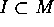
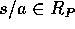

この節では、可換環に逆元をつけ加えてどれぐらい体に近く出来るかを考える。
R を可換環 S を乗法的部分集合とする。
に次のような関係を定義する。
すると、これは同値関係になる。 を含む同値類を で表し、同値類全体を で表す。 に加法と、乗法を次のように定義する。
に加法と、乗法を次のように定義する。
 の表し方によらず、一意的に定まり、可換環になる。これをR の S による商環 (quotient ring) という。
の表し方によらず、一意的に定まり、可換環になる。これをR の S による商環 (quotient ring) という。
 S は、零因子を含まない。
S は、零因子を含まない。
体は、 がただ一つの極大イデアルであるから、局所環である。
R を局所環、M をその極大イデアルとする。I を R とは異なるイデアルとすると、Zorn の補題を用いることにより、I を含む極大イデアルが一つ存在する。R は、局所環であるから  であることが分かる。すなわち、M は、R の真のイデアルをすべて含む。
M を R のただ一つの極大イデアルとする。 だから、 すなわち、。ここで、 とすると、 だから、。よって、。従って、 であり、これはイデアルである。
J を なる R のイデアル、 とする。このとき、 だから、。よって I は R のただ一つの極大イデアルである。
は、 のイデアルである。
のイデアルである。
、 とすると、、 だから、。同様に、
とすると、、 だから、。同様に、 の時、。従って、
の時、。従って、 は のイデアルである。
は のイデアルである。
.
( ) ならば、
) ならば、 だから、明らか。
だから、明らか。
()  とすると、 となる 、 が存在する。従って、 を満たす
とすると、 となる 、 が存在する。従って、 を満たす  が存在する。これより、 だから、仮定より
が存在する。これより、 だから、仮定より  を得る。
を得る。
(`' であること。) とすると、 だから、。すなわち、。
(`' であること。) だから、。 とすると、 であり、かつ、 となる、、
であり、かつ、 となる、、 が存在する。これより、ある により、 となるが、この式の右辺は、P に属さず、左辺は、P に属することになり矛盾。従って、。これより、
が存在する。これより、ある により、 となるが、この式の右辺は、P に属さず、左辺は、P に属することになり矛盾。従って、。これより、 を得る。
を得る。